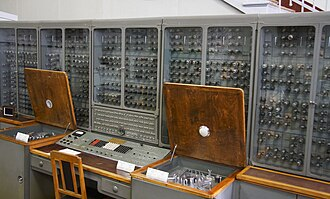

Las Ural fue una serie de computadoras construidas en la Unión Soviética.

El Ural fue desarrollado en la Fábrica Productora de Computadores Electrónicos de Penza, en la Unión Soviética, entre 1959 y 1964. Se construyeron 139 equipos. La computadora fue ampliamente usada en la década de 1960, principalmente en los países socialistas; Hungría tenía tres, por ejemplo; aunque algunos equipos se exportaron a Europa Occidental y América Latina.
Los modelos Ural-1 a Ural-4 estaban basados en tubos de vacío (válvulas), el hardware permitía realizar 12.000 operaciones de coma flotante por segundo. Una palabra constaba de 40 bits y podía contener un valor numérico o dos instrucciones. La memoria principal era de núcleos de ferrita.[cita requerida]
Realizaba tareas matemáticas en centros de computación, industrias y centros de investigación. La máquina ocupaba aproximadamente 90-100 metros cuadrados. Estaba alimentada por corriente trifásica (380V±10%/50Hz) y contenía un estabilizador magnético trifásico con 30kVA de capacidad.